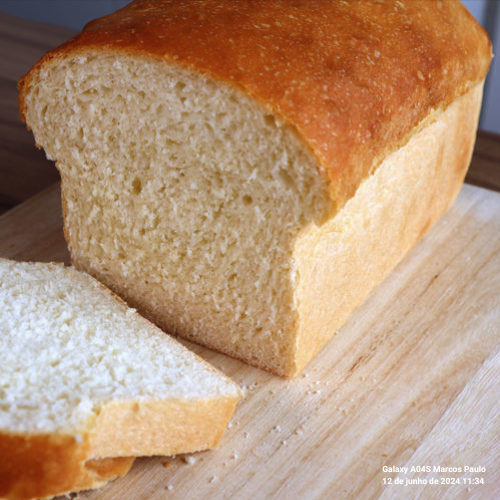
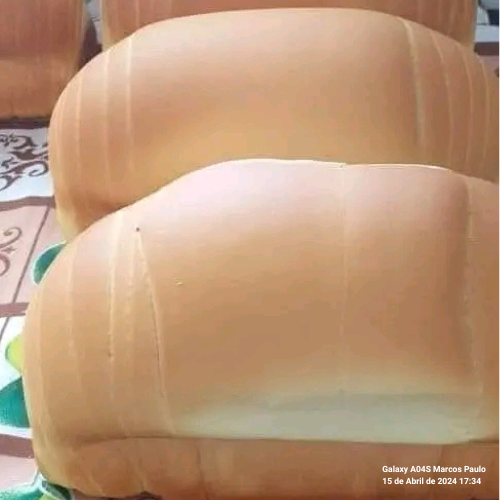
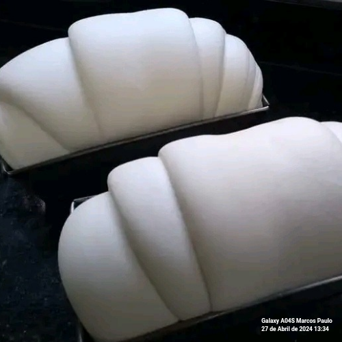
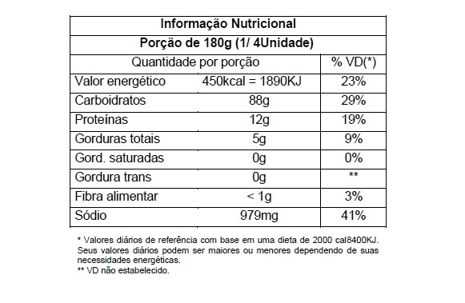

Pão Caseiro



R$ 7,90 un.
Compre AgoraInformações do Pão
Pão caseiro, feito com ingredientes selecionados e assado com amor, proporcionando um sabor único e tradicional.
Carla Meireles
Carla Meireles é uma apaixonada por panificação artesanal, produzindo pão caseiro na Chácara Vida Esperança, utilizando métodos tradicionais para garantir um produto de alta qualidade.
Tabela Nutricional
Ingredientes
- Farinha de trigo
- Água
- Sal
- Fermento biológico